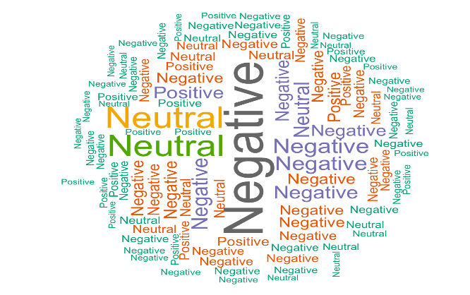
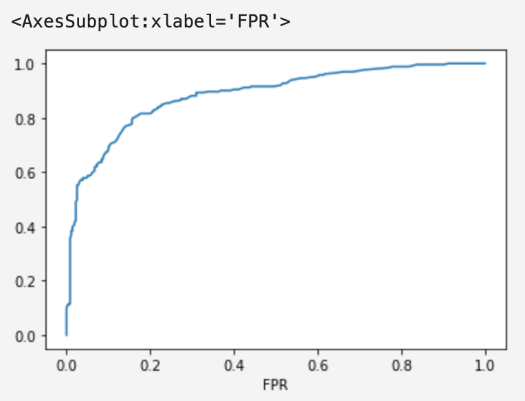

In this project I performed sentiment analysis on Tweets from the First GOP Debate, utilizing R and SQL on the DB2 service hosted on IBM Cloud. The project is conducted based on the occurrence of the initial GOP debate for the 2016 U.S. presidential election, which took place on August 6, 2016, in Cleveland, Ohio.
The event was televised by Fox News and showcased ten prominent Republican presidential candidates of that period. It was seen as an important event in the lead-up to the 2016 U.S. presidential election and provided voters with a chance to see the leading Republican candidates in action and hear their positions on key issues.
Hence, obtaining and analyzing public opinion through sentiment analysis has become crucial and valuable information. This aspect of data analytics examines public sentiment and is a rapidly growing field in modern analytics. Government agencies and businesses are particularly interested in gaining insights from sentiment analysis, as it can greatly improve decision-making speed and accuracy.
Public opinion can guide government policy to positively impact the masses, while businesses can utilize customer sentiment to improve their services and minimize losses.


This project has used the Logistic Regression algorithm to build a predictive model using the low birth weight data using Mllib, an algorithm library within the Spark framework that is available on IBM Cloud.
In addition to clustering, classification, regression, and other algorithms, Mllib also includes the supervised learning algorithm logistic regression. The dataset used aims to investigate the associations between low birth weight and a variety of risk factors (predictors), including maternal age, race, smoking habits during pregnancy, history of premature birth, hypertension, the presence of uterine irritability, and the number of doctor visits in the first trimester. If the baby was born with a low birth weight, the target variable, LOW, indicates that (less than 2500 grams). The additional variables in the dataset offer details on possible risk factors that could be connected to low birth weight.
The predictive model for this project was constructed using the Logistic Regression algorithm, leveraging the Titanic Survivors dataset. Mllib, an algorithm library in the Spark framework accessible on IBM Cloud, was employed for this purpose. Apart from various algorithms like clustering, classification, and regression, Mllib features the logistic regression supervised learning algorithm. The exploration of Titanic data revealed numerous noteworthy connections between passenger information and survival rates. Here are a few of the main conclusions:
Out of the 756 passengers, the results indicate that 443 died and 313 survived.
The number of fatalities represents 59% of the passengers, while the number of survivors represents 41%.
When age distribution is considered, children (under 15 years old) passengers had a higher survival rate than adults.
Children generally had a high survival rate, whereas adults typically had a lower survival rate.
The logistic regression model performed reasonably well on both the training and test datasets, according to the model evaluation.
In comparison to the test set, the accuracy rate for the training set was 81.74%.
This implies that the model has some predictive ability but might not be completely trustworthy.
This is ‘Time Series Presentation’ focused on Suicidal Deaths and Economic growth across the world using data from 2000 to 2010.In this time series presentation, I tried to see the relationship between economic development and suicidal death numbers across the country. Specifically, how suicide numbers are influenced by three variables namely population growth rate, cost of living index, and per capita income.
Let me start by questioning ‘Does Economic Growth influence suicidal death numbers?’. I found that there is a significant correlation between suicidal death numbers, GDP per capita income, and population growth rate, and I did not see a significant correlation between the cost-of-Living index and suicidal death across countries worldwide. GDP per capita is trending upward sharply, and suicide number goes downward slightly worldwide. In my case, Tableau forecasts nearly 39,000K GDP per capita and suicide number 183 across the country for 10 years period with a 95% confidence interval. These figures indicate that GDP is increasing as suicide is decreasing. With the forecast, I have high confidence because, as proved with another research with similar cases, the GDP per capita has a significant influence on the number of suicides. Therefore, the finding proves my hypotheses true. I have started the presentation by questioning Does Economic Growth influences suicidal death numbers? I ended up concluding Yes both have an inverse relationship. As GDP per capita goes upward, suicidal death goes downward. The population growth rate is slightly moving upward across the world. Considerable numbers of countries' population growth are above average worldwide. Hence, there is an indication of a positive relationship between GDP per capita and population. To sum up, the suicide number is highly correlated with respective economic growth across countries.
The goal of this project was to create a chatbot that will guide users by providing the information and recommendations they need on Covid-19.
Any person who is exhibiting symptoms of COVID-19 and is interested in learning more about those symptoms will be one of the end users. A complex chatbot called Amanuel’s Health Advise Center has been developed using the IBM Watson Assistant. For this project, a Mr. Covad chatbot that provides information about covid 19, and specific treatment recommendations based on covid-19 symptoms was created using the Watson Assistant service in IBM Watson Studio. If the user exhibits no symptoms, the chatbot determines whether they took precautions to stay safe. However, the bot will walk the user through all the necessary information if they exhibit symptoms of COVID 19.
Vaccine types, testing locations, and available health insurance plans are a few examples included in the dialog.